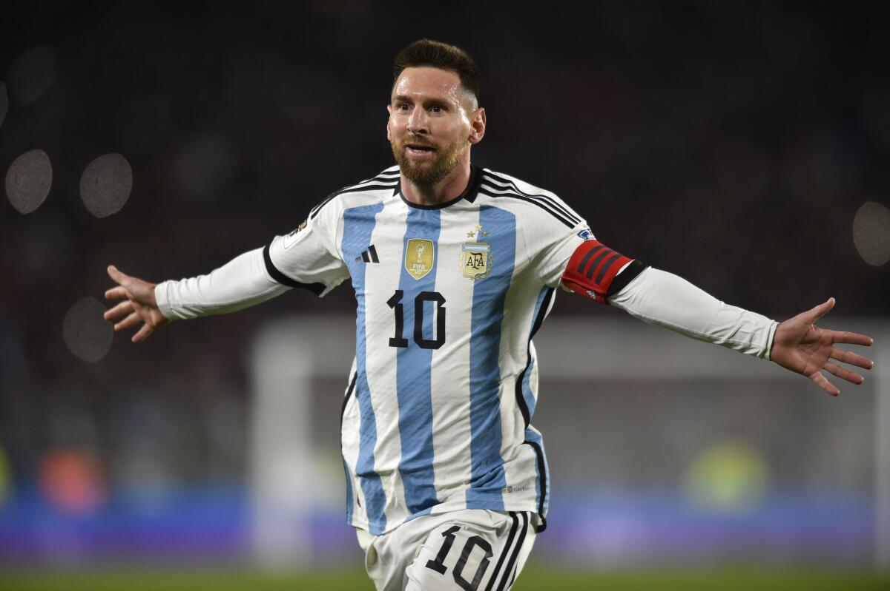

Messi viajará a Bolivia para las eliminatorias
Lionel Messi viajará con Argentina a Bolivia para el segundo partido por las eliminatorias sudamericanas rumbo al Mundial de 2026. El técnico de la selección campeona del mundo, Lionel Scaloni, dijo el domingo que el astro del Inter Miami hará el viaje, aunque no confirmó si estará en el once titular para el choque en la altura de La Paz el martes. Argentina debutó el jueves como local con un triunfo sobre Ecuador por 1-0, con un gol de tiro libre de Messi. Con ese gol, el capitán alcanzó los 29 gritos en las eliminatorias sudamericanas e igualó la marca de su amigo uruguayo Luis Suárez como máximo artillero en la historia de la competencia. “Messi está en condiciones de viajar. Veremos si juega, todavía faltan dos días para el partido y tomaremos la decisión mañana (lunes) o el mismo martes”, afirmó Scaloni.
“El otro día Leo estaba cansado y pidió el cambio. Pero no es necesario que hablemos antes de los partidos con él sobre esto. Se va viendo sobre la marcha”, añadió.
“Bolivia es un buen equipo y su entrenador viene trabajando con una propuesta interesante”, afirmó sobre el rival, que viene de ser goleado 5-1 en su estreno como visitante ante Brasil.
Argentina salió victoriosa 2-1 en su previa visita a La Paz por las eliminatorias, en octubre de 2020.
Messi ha jugado tres veces en La Paz en partidos de las eliminatorias. La primera visita se saldó una derrota 6-1 en 2019, la segunda acabó con un empate 1-1 en 2013 y la victoria hace casi tres años. No ha podido marcar allí.
Más a fondo sobre el reto de jugar en la altura, Scaloni dijo que “no hay ciencia” para lidiar con las condiciones.
“Todo el mundo lo sabe, ninguno tiene la varita mágica”, señaló. “Está claro que tiene una dificultad añadida, pero bajo ningún concepto nos vamos a quejar. Todo el mundo va a jugar ahí. No se puede hacer nada. Se trabajan otros aspectos, pero si no estás adentro de la cancha no te das cuenta”.